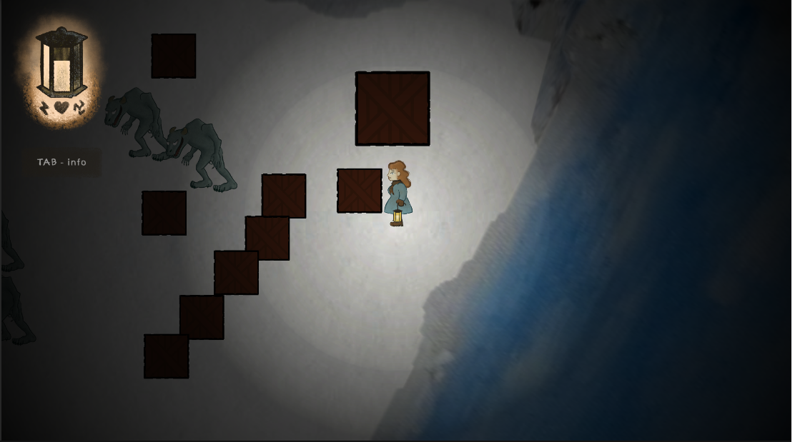

Witch trials

Witch trials is a student project exploring basic storytelling, and atmosphere. The game consists of three primary sound biomes across which small levels were designed. The player has the ability to walk, sprint, and interact with objects, such as pushing crates and rocks, as well as picking quest object up. The player has no means of attacking enemies, and thus has to sneak past run intelligently, or use objects to hide behind. The intent of the game, was to bring an immersive experience to the player, where the game world would draw the player in through quest objective, driven dialogue, obstacles, location aesthetic, and sound atmosphere.
